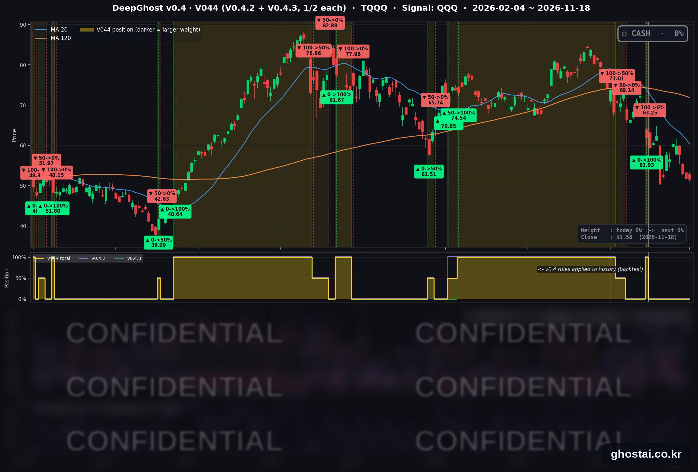

다우 1% 하락·나스닥 반등, 매파적 FOMC 의사록
· Ghost.AI 데일리 리포트
👻 매일 시그널과 히스토리를 홈페이지에서 한눈에 → www.ghostai.co.kr
회원 페이지 안내 — 회원 가입 데일리 레포트의 "오늘의 매매 신호"는 26년 12월 31일까지만 제공됩니다. 이후는 회원 페이지(무료) 에서 확인하시기 바랍니다.
다우는 1.11% 내리고 나스닥은 0.42% 올라 지수 방향이 갈렸습니다. 유나이티드헬스(-10.21%)와 셰브런(-4.74%)이 다우를 끌어내렸고, S&P 500 은 0.23% 내려 6월 이후 처음 5거래일 연속 하락했습니다. 엔비디아는 실적이 예상을 넘었지만 2.89% 내렸고 AMD·브로드컴·아마존은 올랐습니다. FOMC 의사록은 매파적이었지만 10년물 금리는 3bp 내렸습니다. TQQQ 는 1.22% 올라 4거래일 연속 하락을 멈췄고, 전략은 현금 보유 중입니다.
📊 오늘의 매매 신호
| 항목 | 내용 |
|---|---|
| 오늘의 신호 | 🟡 신규 신호 없음 — 전략은 현금 보유를 유지합니다 |
| 포지션 상태 | 💵 현금 보유 중 (OUT OF POSITION) |
| 최근 매매 | 10월 19일 $71.01 매도 → 10월 30일 $63.93 매수 · 11월 2일 $63.25 매도(-1.06%) |
| 현금 보유 기간 | 2026-11-02 ~ 2026-11-18 (13거래일, 11월 2일 시가 매도 후) |
| TQQQ 종가 | $52.44(+1.22%) |
TQQQ 시그널 — OUT OF POSITION
현재 상태: 현금 보유 중 | 전략 비중 0% → 다음 거래일 0%

전략은 11월 2일 시가 63.25달러에 TQQQ 를 매도한 뒤 현금 보유 중입니다. 11월 18일에도 새 신호는 나오지 않았습니다.
TQQQ 는 시가 52.81달러에서 출발해 장중 50.91달러까지 밀렸다가 1.22% 오른 52.44달러로 마감했습니다. 4거래일 연속 하락 뒤 첫 상승입니다. 6월 2일 최고 종가(87.22달러)보다는 39.88% 낮습니다. 11월 2일 매도가보다 17.09%, 10월 19일 매도가보다 26.15% 낮은 가격입니다.
오늘 미국 시장 — 시황 요약
지수 마감
| 지수 | 종가 | 등락률 |
|---|---|---|
| S&P 500 | 7,323.64 | -0.23% |
| 나스닥 종합 | 24,429.89 | +0.42% |
| 다우존스 | 50,198.17 | -1.11% |
| 러셀 2000 | 2,714.31 | +0.46% |
| QQQ (나스닥100) | 659.51 | +0.39% |
| 반도체 ETF (SOXX) | 141.85 | +0.28% |
| TQQQ | 52.44 | +1.22% |
지수는 엔비디아 실적 기대로 오르며 출발했다가 S&P 500 이 오후에 하락 전환했습니다. 다우는 장중 609포인트까지 밀렸습니다. S&P 500 은 200일선보다 0.31% 낮아 이틀 연속 200일선 아래에서 마감했고, 종가는 7월 29일 이후 가장 낮습니다. 다우 종가는 6월 10일 이후 가장 낮습니다. 나스닥·QQQ·러셀 2000 은 4거래일 연속 하락 뒤 반등했습니다. 10월 6일 최고 종가와 비교하면 S&P 500 은 6.33%, 나스닥은 11.49% 낮습니다.
국채 금리 동향
미 재무부 수익률 곡선 기준입니다.
| 만기 | 11/17 | 11/18 | 전일 대비 |
|---|---|---|---|
| 3개월 | 4.33% | 4.34% | +1bp |
| 2년 | 4.80% | 4.80% | 0bp |
| 5년 | 4.90% | 4.89% | -1bp |
| 10년 | 5.10% | 5.07% | -3bp |
| 30년 | 5.46% | 5.41% | -5bp |
단기물은 그대로였고 장기물이 더 많이 내려 곡선이 평탄해졌습니다. 10년물은 사흘 연속 내렸습니다. 매파적 의사록에도 2년물이 움직이지 않은 것은 12월 인상이 이미 가격에 반영돼 있어서입니다. 10년-3개월 스프레드는 73bp, 10년-2년은 27bp 로 역전은 없습니다. 금리가 내린 날에도 다우가 1% 넘게 내렸으므로 다우 하락의 원인은 금리가 아니라 헬스케어·에너지 개별 악재입니다.
연준 발언 & 금리 패스
- 10월 FOMC 의사록 (11월 18일 공개): 기준금리 3.75~4.00% 동결에 10명이 찬성했고 2명은 25bp 인상을 주장했습니다. 거의 모든 참석자가 경제가 예상대로 흘러가면 추가 인상이 적절할 가능성이 높다고 봤고, 두어 명은 25bp 보다 큰 인상도 검토할 수 있다고 했습니다. 많은 참석자가 AI 설비 투자를 물가 상승 위험의 원인으로 꼽았습니다.
- 월러 이사 (11월 18일 인터뷰): 12월에 25bp 를 올린다면 1월 추가 인상을 분명히 예고해야 하고, 그렇지 않다면 12월에 50bp 를 올려야 한다고 말했습니다. 물가가 잘못된 방향으로 가고 있고 퍼지고 있다고 했습니다.
- 금리 경로: 시장의 관심은 12월 인상 여부가 아니라 폭(25bp 대 50bp)과 1월 추가 인상 예고로 옮겨 갔습니다. 다음 회의는 12월 8~9일입니다.
오늘의 핵심 이슈
- 다우는 내리고 나스닥은 올랐습니다. 미국 메디케어 당국(CMS)이 메디케어 어드밴티지 감사 범위를 넓히는 규정안을 내놓은 뒤 유나이티드헬스가 10.21% 내렸습니다. 1월 27일 이후 하루 하락 폭이 가장 큽니다. 유가 급락으로 셰브런(-4.74%)도 내렸습니다. 반면 나스닥은 경기소비재와 일부 반도체주 덕에 올랐습니다.
- 엔비디아는 실적이 예상을 넘었지만 2.89% 내렸습니다. 150.96달러로 5거래일 연속 내려 2025년 6월 24일 이후 가장 낮은 종가입니다. 반면 AMD 는 5.31%, 브로드컴은 3.64% 올랐습니다. 앤트로픽은 공모가를 희망 범위(70~78달러)보다 높은 83달러로 정했고 11월 19일 나스닥에서 거래를 시작합니다. 투자사인 아마존은 3.82% 올랐습니다.
- 매파적 연준에도 장기 금리·유가·금이 함께 내렸습니다. 10년물은 5.07%, 30년물은 5.41% 로 내렸고, WTI 는 원유 재고 급증으로 3.20%, 금 선물은 약 3.5% 내렸습니다.
변동성 & 투자심리
VIX 는 3.53% 내린 24.56 으로 마감해 5거래일 만에 내렸습니다. 다만 11월 12일 종가(18.70)보다는 아직 31% 높습니다. 공포탐욕 지수는 25(공포)로 전일과 같고, 1주 전 36, 1개월 전 18(극단적 공포)입니다(feargreedmeter.com 표시값, 참고용). 나스닥은 52주 신저가 종목이 439개로 신고가(33개)보다 훨씬 많았고, 하락 종목이 상승 종목보다 많았습니다. 지수는 올랐지만 반등은 일부 대형주에 몰렸습니다.
매크로 & 원자재
| 품목 | 종가 | 등락률 |
|---|---|---|
| WTI 선물 | $83.26 | -3.20% |
| 브렌트 선물 | — | 하락 |
| 원유 ETF (USO) | $136.11 | -2.94% |
| 금 선물 | 약 $3,729~3,732 | 약 -3.5% |
| 금 ETF (GLD) | $341.19 | -3.20% |
원유는 주간 재고가 예상보다 크게 늘어 3% 넘게 내렸고, 금은 매파적 연준 기대 속에 1년여 만의 최저 수준까지 내렸습니다. 10월 주택착공은 9.9% 늘어 연율 130.9만 호였고, 건축허가는 7.4% 줄었습니다. 업종별로는 경기소비재(+1.79%)가 가장 많이 올랐고 에너지(-3.27%)·헬스케어(-2.20%)가 가장 많이 내렸습니다.
주요 종목 동향
| 종목 | 종가 | 등락률 | 비고 |
|---|---|---|---|
| AMZN | 267.74 | +3.82% | 앤트로픽 투자사, 상장 앞두고 상승 |
| AVGO | 354.05 | +3.64% | 엔비디아 실적 뒤 상승 |
| TSLA | 383.72 | +0.95% | |
| GOOGL | 282.44 | +0.80% | 앤트로픽 상장 앞두고 상승 |
| MSFT | 508.29 | +0.40% | |
| NFLX | 59.82 | +0.23% | |
| AAPL | 352.45 | +0.15% | |
| META | 616.38 | -0.40% | |
| INTC | 54.67 | -0.91% | |
| MU | 705.27 | -1.00% | |
| NVDA | 150.96 | -2.89% | 실적 예상 상회에도 5거래일 연속 하락 |
| QCOM | 159.81 | -4.12% | 11월 5일 이후 최대 하락 |
커버리지 12종목 중 7종목이 오르고 5종목이 내렸습니다. 반도체 5종목 중에서는 브로드컴만 올랐습니다.
다음 일정 (미 동부시간)
- 11/19(목) 앤트로픽 나스닥 거래 시작(ANT, 공모가 83달러) / 장 시작 전 월마트 실적 / 08:30 주간 실업수당 청구·필라델피아 연은 제조업지수 / 09:25 제퍼슨 부의장 대담 / 14:15 바 이사 대담
- 11/20(금) 08:25 월러 이사 환영사 / 12:15 쿡 이사 연설 / 11월 미시간대 소비자심리 확정치 / 월간 옵션 만기
- 11/25(수) 14:00 베이지북
- 11/26(목) 추수감사절 휴장, 11/27(금) 13:00 조기 폐장
- 12/4(금) 08:30 11월 고용보고서
- 12/8~12/9 FOMC
Ghost.AI — Quantitative AI Investment
Model: DeepGhost v0.4 | Transformer-Based Deep Learning
Coverage: 14 tickers | Updated every trading day after US market close
⚠️ 본 자료는 정보 제공 목적으로만 작성되었으며 투자 권유가 아닙니다. 모든 투자의 책임은 투자자 본인에게 있습니다. 과거 성과가 미래 수익을 보장하지 않습니다.
[유의사항]
- 본 서비스는 불특정 다수를 대상으로 발행되는 단방향 정보 제공 서비스이며, 투자자 개인의 재산 상황·투자 목적·위험 선호도를 반영한 개별 투자 조언이 아닙니다.
- 고스트에이아이 주식회사는 고객과 쌍방향 의사소통(개별 상담, 맞춤형 자문 등)을 제공하지 않습니다.
- 본 콘텐츠는 투자 권유 또는 매매 주문의 청약·청약의 권유에 해당하지 않으며, 최종 투자 판단 및 그에 따른 손익의 책임은 전적으로 투자자 본인에게 있습니다.
고스트에이아이 주식회사